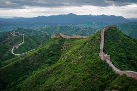

Beijing
Como solemos conocerla, es la capital del país más poblado del mundo. Fue la sede de la dinastía Quing hasta la formación de la república en 1911. Tiene gran cantidad de sitios históricos interesantes para el viajero. La ciudad está construida en suelo llano y de forma muy regular. Sólo hay una colina en los límites de la ciudad (en el Parque Jingshan, al norte de la famosa Ciudad Prohibida) y, al igual que la configuración de la Ciudad Prohibida, tiene carreteras concéntricas, de forma rectangular, que envuelven a la metrópoli.

Dominique: Beijing, en mi caso, o Shanghai son las ciudades a las que generalmente se llega a China debido al gran tráfico de aeronaves que hay entre China y los otros países. Volar hacia China no supone ningún impacto ni shock cultural, la cosa es cuando uno llega a Beijing
La Gran Muralla China Aunque desde antiguo los emperadores chinos habían construido barreras para defenderse de los "bárbaros", fueron los Ming, en los siglos XV y XVI, quienes erigieron una muralla continua de al menos 7.000 kilómetros

La Ciudad Prohibidaes un complejo palaciego situado en Pekín, capital de China. Durante casi quinientos años, desde la dinastía Ming hasta el final de la dinastía Qing, fue la residencia oficial de los emperadores de China y su corte, así como centro ceremonial y político del Gobierno chino.
El Palacio de Verano es un parque situado a unos 12 km del centro de Pekín, en la República Popular China. Desde el año 1998 está considerado como Patrimonio de la Humanidad por la Unesco
El Templo del Cielo es el mayor templo de su clase en toda la República Popular de China. Fue construido en el año 1420 y tanto la dinastía Ming como la Qing lo utilizaron para adorar por las cosechas y dar las gracias al cielo por los frutos obtenidos.
El Parque Olímpico de Pekín es un complejo deportivo construido en el distrito de Chaoyang de la ciudad de Pekín, República Popular de China para albergar los Juegos Olímpicos de 2008.